第1轮普通输入试玩
第14回合完成
1,775次按键记录，含实际战后操作。
十张战斗地图、十处战后据点与共享营站逐一复查。雪峡、日塔与黑钟村保留寒区；铁骑关和王都仍处日返保护带。东线沙城、盐原、湿沼与沉没祭所各用对应地表，黑昼一直延续到局部修复得到验证。
九张地图作必要的环境修正，M42铁骑封锁线原图保持。已确认M41的桥路、部署和战术构图保持，仅统一冬季医舍与岩脚残雪。全部关卡的行动格、敌我位置、任务对象、胜败规则、成长与人物动画沿用。代码、源地图和独立应用同步。
雪峡村、北境日塔和黑钟村的战斗图一直是雪地，但旧世界图在这些节点显示草地。现按寒冷高地和村落范围补连续雪地、冬季林岩与清扫道路；保留铁骑关、王都的草地日照带。观测台改盐原，亡潮沼泽与孤岛改湿地，祭所节点用风化石地。第一、二章的故事时间选景及第三章盐原修订继续保留，原世界节点、路线、解锁和移动规则逐字节保持。实际完成第四章后进入第五章，沿用已确认的高地雪地和局部保护，避免只因切换章节就回退旧底图。

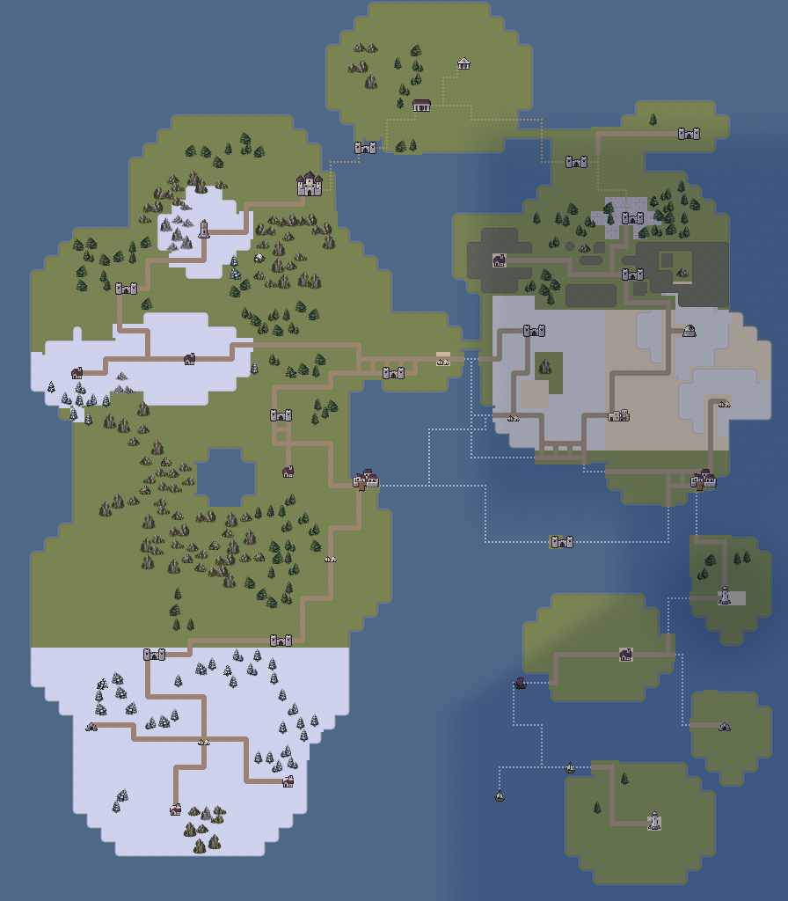
夺取祭所之前维持黑昼。三个调节点的隔离试验成功后，祭所本身恢复亮光；两岸D42验证完成后，亮区扩展到邻近亡潮沼泽。远处沙城、盐原、孤岛及旧群岛仍保持原有冷暗环境。雪地不会因安全停塔立即融化；气候与照明分别表达。
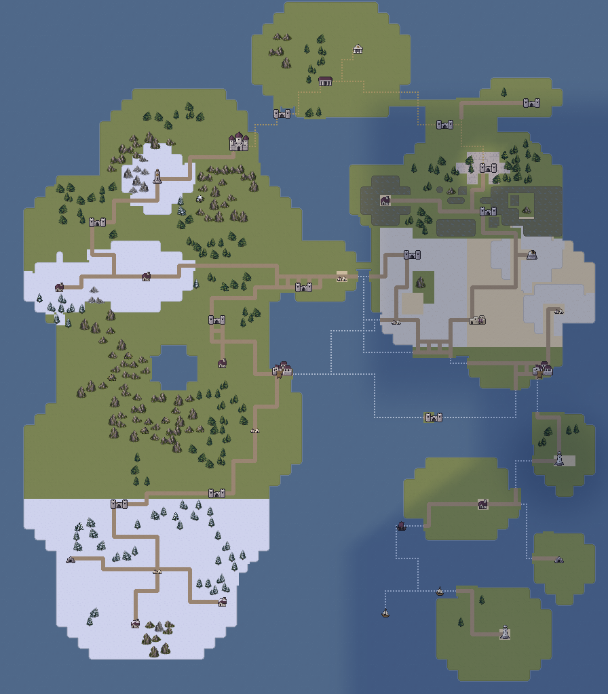

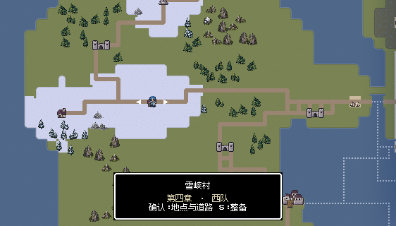
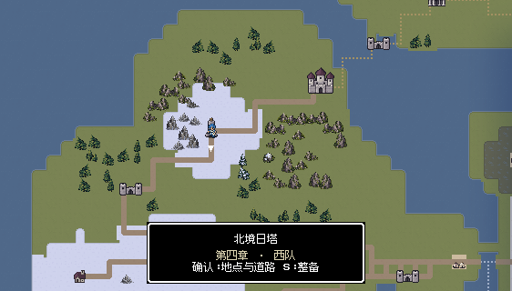
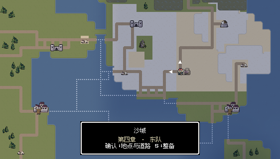
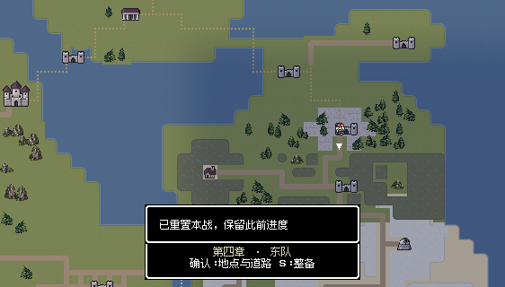
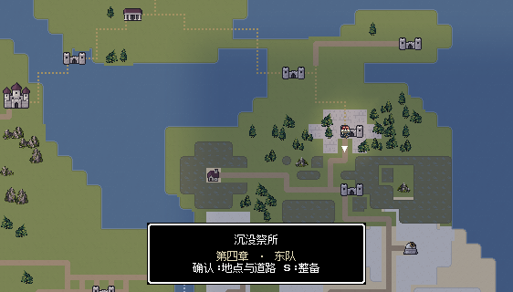
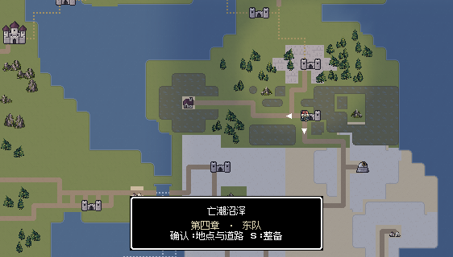


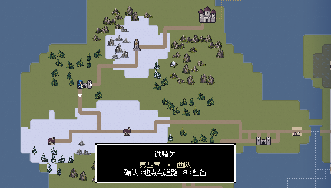


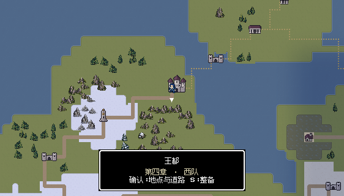


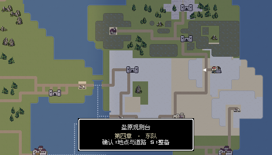


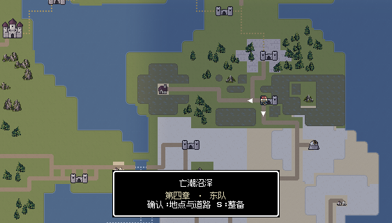


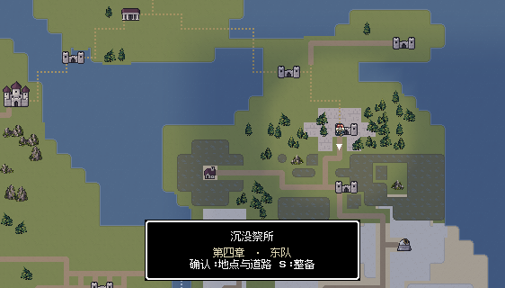
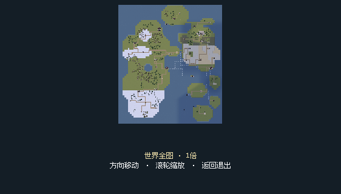

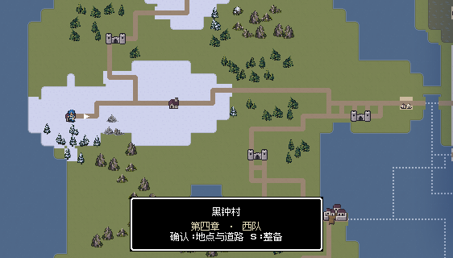


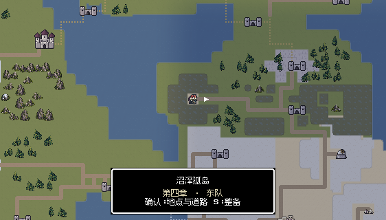


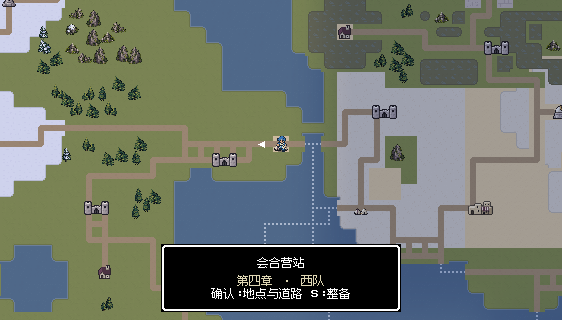

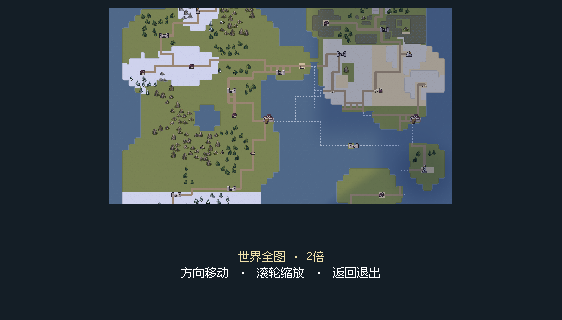


雪峡积雪、雪松、清扫土道、木桥与流水保持已确认构图；医舍换同尺寸冬季屋顶，裸露大岩换既有冬岩。

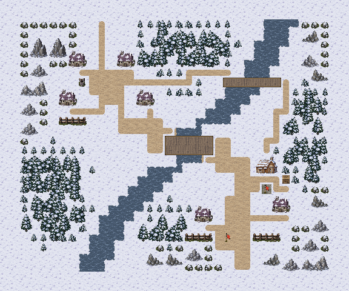
1,775次按键记录，含实际战后操作。
1,827次按键记录，含实际战后操作。
铁骑投送营位于仍获日照的草地交通带，土道、木栅与石质设备坪符合用途，保持原图。
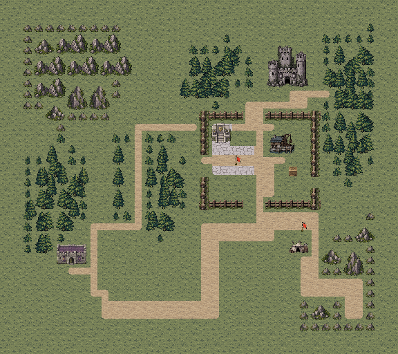
1,035次按键记录，含实际战后操作。
1,201次按键记录，含实际战后操作。
日塔外围仍是雪原；露天石廊换风化砌石，塔外仓房、医舍和主堡使用同尺寸冬季外观，岩脚残雪与周围一致。控制室室内在战后据点表达。

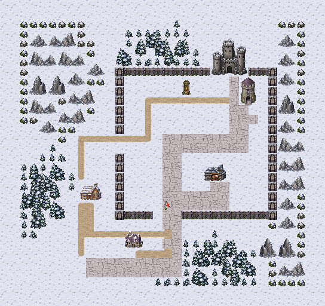
王都道路与城门院是露天空间，紫色室内感地砖换室外砌石；草地、土路、医舍退路和双门保持。
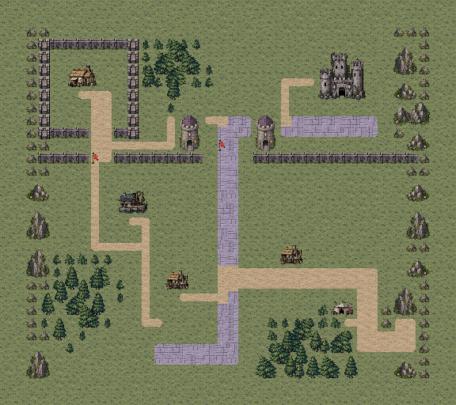
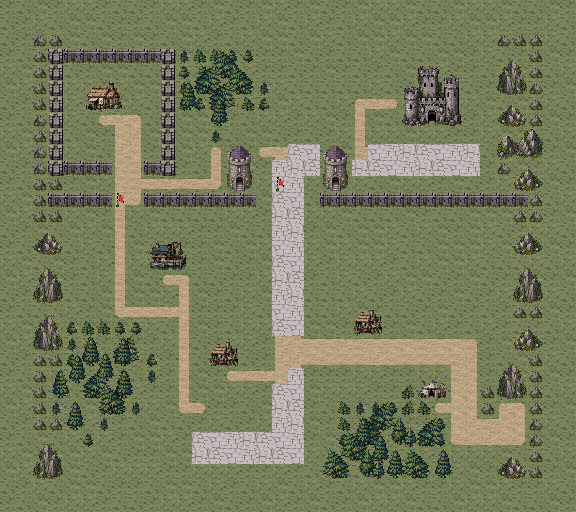
1,248次按键记录，含实际战后操作。
1,303次按键记录，含实际战后操作。
沙城保留沙地、压实土路、石制井台和居民区；冷暗光延续东部黑昼，据点同步沙地而非盐地。
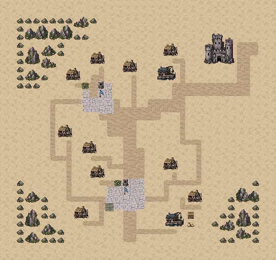
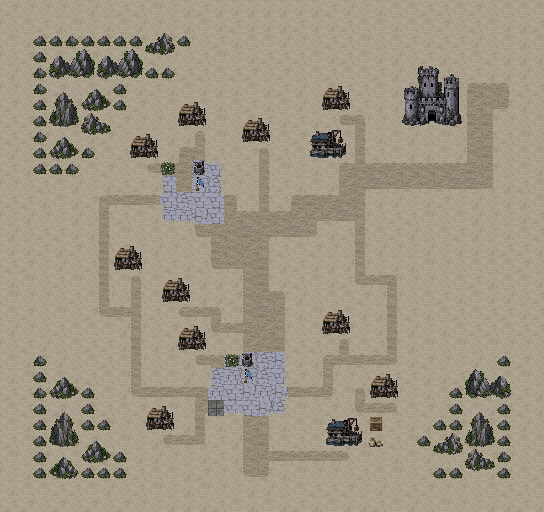
1,817次按键记录，含实际战后操作。
1,889次按键记录，含实际战后操作。
观测台露天盐原、石质设备庭与潮池保持，冷暗光延续；东楼战后据点改真正室内，避免屋内再摆房屋。

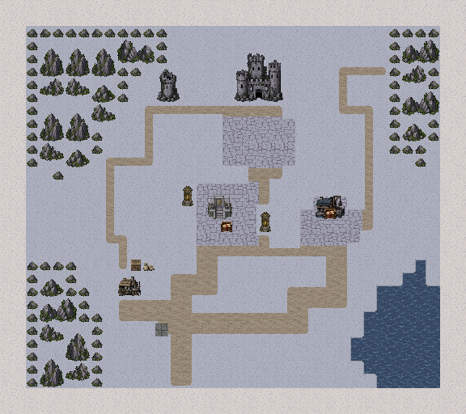
728次按键记录，含实际战后操作。
1,184次按键记录，含实际战后操作。
湿沼、草质干岛、土道、木栈与接应船各有用途，保留地形并延续黑昼；居民既有干地撤离路线保持。
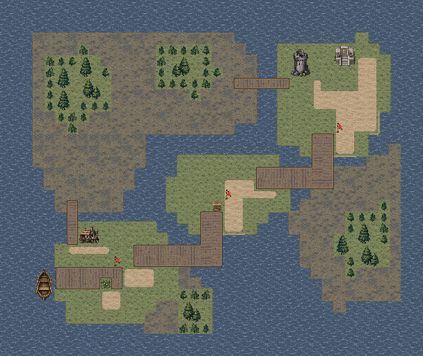
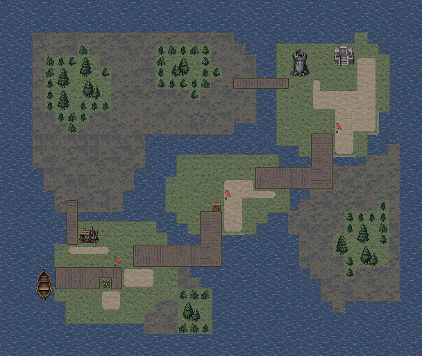
1,522次按键记录，含实际战后操作。
1,453次按键记录，含实际战后操作。
沉没祭所是露天石台和木制检修桥，海水环绕，非室内大厅；战时延续冷暗光，局部试验成功后的祭所与邻近区域按实际剧情标记逐步恢复亮光。

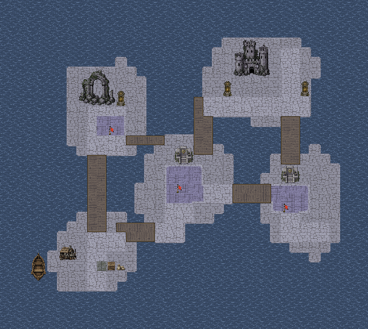
1,730次按键记录，含实际战后操作。
1,725次按键记录，含实际战后操作。
黑钟村仍处失去庇护的寒区，名册屋与医舍改同尺寸冬季外观，岩脚补既有残雪；村道、门前交互与避难院保持。
1,205次按键记录，含实际战后操作。
841次按键记录，含实际战后操作。
沼泽孤岛使用湿地、草质干地、土道和木桥，诊疗院是岛上室外院落；延续区域黑昼，保留病人上船与双桥路线。
日塔控制室和观测台东楼从雪地／盐地小屋改为去顶室内石地、连续墙体与真实设备；取消室内完整屋顶房屋。沙城井台从盐地改沙地，投送站和伤兵门使用军营仓房。船口、祭所与孤岛交接台补通向船只的木登船口。会合营站沿用第三章沙岸材质。


十图各完成两轮最终版本通关，共20场、25,591次普通按键，包含守井、保护记录、居民和病人撤离、调节点控制及战后据点操作。使用真实开发记录的隔离副本，经普通整备重新进入当前地图；没有编辑属性、随机结果、人物位置或强制胜利。
| 地图 | 第一轮 | 第二轮 |
|---|---|---|
| M41 | 14回合 | 15回合 |
| M42 | 11回合 | 13回合 |
| M43 | 10回合 | 10回合 |
| M44 | 12回合 | 12回合 |
| F41 | 19回合 | 19回合 |
| F42 | 8回合 | 12回合 |
| F43 | 19回合 | 18回合 |
| F44 | 22回合 | 21回合 |
| S41 | 14回合 | 9回合 |
| S42 | 11回合 | 9回合 |
十图两轮逐关通关之外，从本轮F44真实战后记录正常返回会合营站，完成第四章收束并进入第五章；不修改记录中的战果、伤情或剧情标记。
3081项规则、连通与保存检查，4182项修改范围检查，250项世界阶段检查，1460项据点显示检查通过。30张战斗、42张世界、11张据点和2张章节衔接实机视口在后台捕获，记录的文字布局检查没有错误。独立应用完成13,192项地图与资源核对，包内40图与当前源文件SHA-256逐一相同。
两轮逐关重开不等于从新游戏通关两次；章节入口从本轮真实F44战后记录单独验证。世界试验前、试验后与两岸验证后截图使用实际记录和普通结算／行军操作，未为截图改剧情标记。故事阶段组合测试只在内存中运行，另标为检查夹具。
本轮复用既有原生像素瓦片、冬季建筑和室内设备，没有新增AI生成素材。图集保留原始瓦片尺寸与索引，图片无损优化；未为体积牺牲清晰度。没有安装手机包；HTML资源和脚本检查不等于浏览器布局引擎实测。